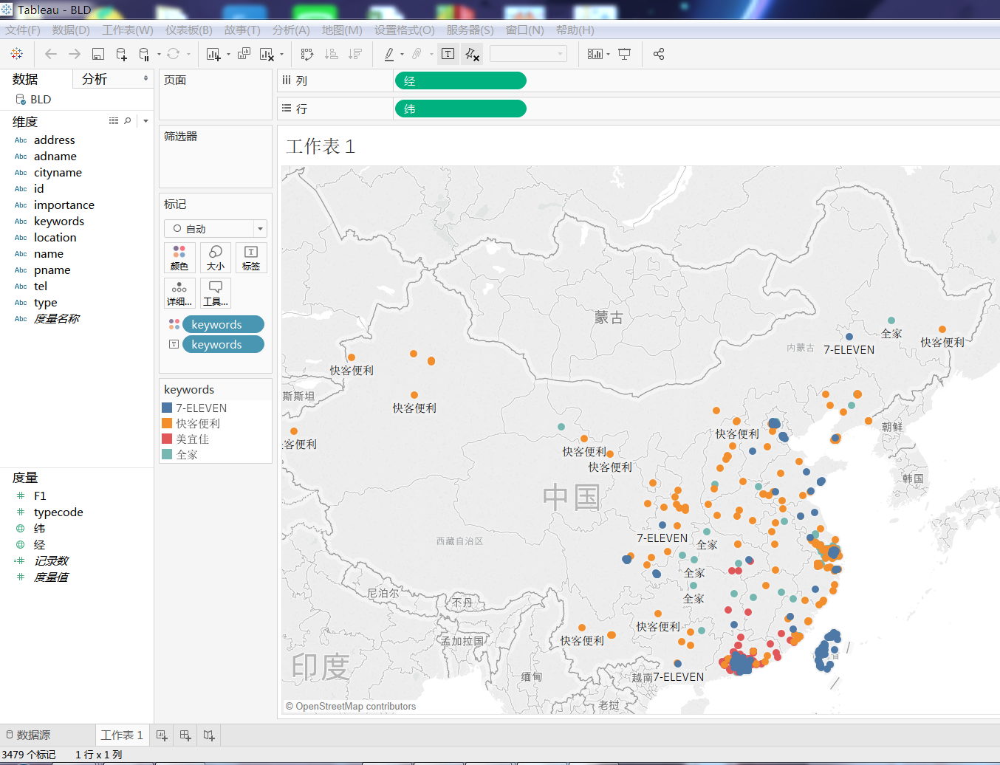

# 信息可视化作品之便利店
<html class="no-js" lang="zh-CN">
	<head>
		<meta charset="utf-8">
		<meta name="description" content="关于便利店">
		<meta name="viewport" content="width=device-width">
		<link rel="stylesheet" href="css/styles.css">
	</head>
	<body>
			<p class="Strap">数据来源于高德地图，研究的是四家连锁便利店，分别是7-ELEVEN、快客便利、美宜佳及全家</p>
		<div class="IntroWrapper">
			<p class="IntroText">数据量比较少，应增加多几家连锁便利店以供研究，从图上可以直观地看到这四家便利店在我国主要集中在东南地区
			</p>
			<div class="MoneyShot">
				
				<p class="ImageCaption"></p>
				</a>
			</div>
		</div>
